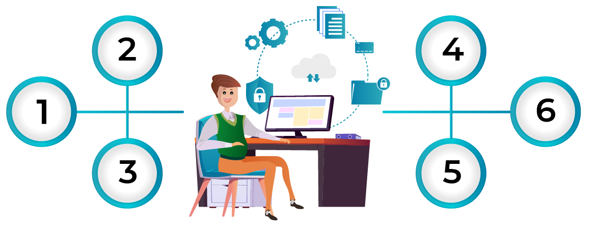
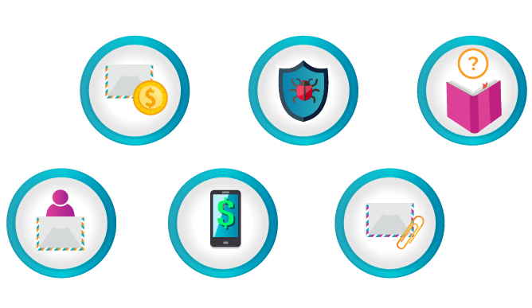
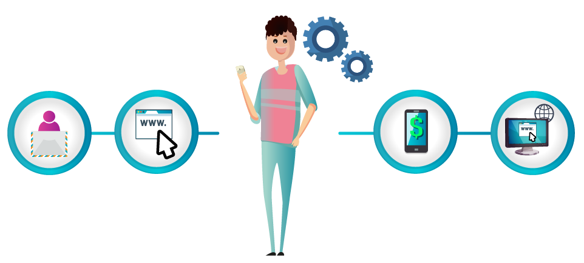
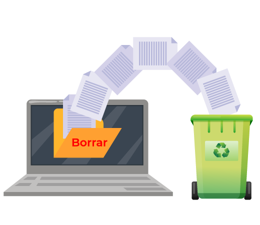
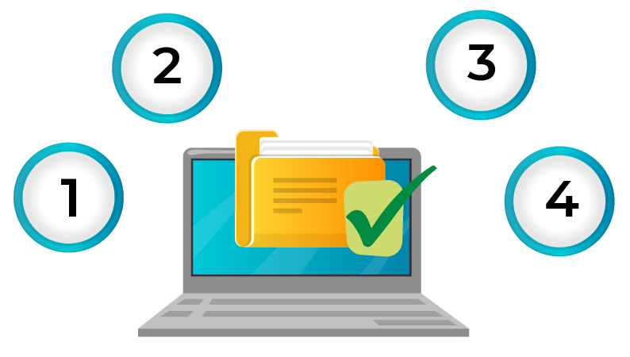
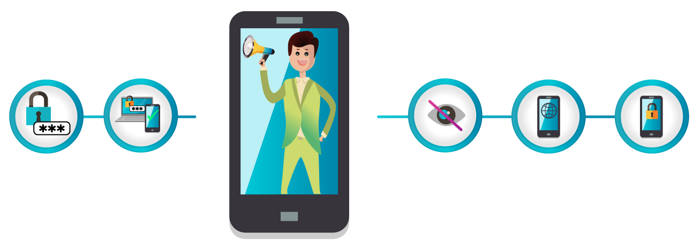

La ingeniería social es un método muy utilizado por los delincuentes para realizar el robo de identidad a sus víctimas. Esta práctica permite obtener información confidencial a través de la manipulación de las personas.
El delincuente usará
comúnmente la comunicación telefónica, el envío de correos electrónicos maliciosos u otros métodos, con el objetivo de engañar a sus víctimas y llevarlas a entregar información personal o de la organización en la que trabajan.
Recomendaciones para evitar el robo de información
Para que un delincuente no tenga éxito con el robo de información, se deben tener en cuenta las siguientes recomendaciones:

Phishing y spear phishing
Inicio
Pulsa los botones para conocer cada una de las modalidades de robo de información.
Phishing
El phishing es una técnica (ciberamenaza) que consiste en el robo de información personal a través de servicios de mensajería electrónica.
El proceso de robo de información es el siguiente:
Spear phishing
El spear phishing cuenta con los mismos elementos del phishing, con la particularidad de que esta ciberamenaza se basa en la selección de un objetivo específico, que puede ser una empresa o persona de interés para el atacante.
El propósito principal será el robo de información confidencial para la ejecución de delitos informáticos en contra de las víctimas.
Pasa el mouse sobre el dato de interés
Dato de interés
Recomendaciones para evitar ser víctima de estas modalidades de fraude
Para evitar ser víctima de un fraude por causa de un ataque de phishing o spear phishing, se deben tener en cuenta las siguientes recomendaciones:

Vishing y pretexting
Inicio
Pulsa los botones para conocer cada una de las modalidades de robo de información.
Vishing
El vishing es un ataque similar al phishing, solo que en este caso el delincuente hace uso de las llamadas telefónicas, haciéndose pasar por un representante de la entidad que está suplantando, con el objetivo de engañar a su víctima para obtener información confidencial.
El proceso de robo de información es el siguiente:
Pretexting
El pretexting es una técnica delictiva en la cual el atacante, por medio de una llamada telefónica, crea una situación o emplea una historia ficticia en contra de su víctima para captar su atención y envolverla en su engaño, con el objetivo de obtener información confidencial, la cual no sería revelada en condiciones normales.
Recomendaciones para evitar ser víctima de estas técnicas delictivas
Para evitar ser víctima de un fraude por causa de un ataque de vishing o pretexting, se deben tener en cuenta las siguientes recomendaciones:
Smishing
El smishing es un ataque similar a un phishing o vishing, la diferencia se encuentra en que el medio que utiliza el delincuente para engañar a sus víctimas es el envío de mensajes de texto (SMS) a los celulares de las personas.
Por lo general, la información enviada por este medio busca alertar o captar la atención de la víctima, haciéndole creer que sus productos presentan irregularidades, que ha sido favorecido con premios o beneficios, etc.
Recomendaciones para evitar ser víctima de esta modalidad
Para evitar ser víctima de un fraude por causa de un ataque de smishing, se deben tener en cuenta las siguientes recomendaciones:

Dumpster diving (husmear en la basura)

En ciberseguridad, el término inglés dumpster diving consiste en investigar la «basura» de una persona u organización para encontrar información sensible que pueda ser utilizada para atacar la infraestructura o red informática.
En muchas ocasiones, se trata de obtener datos sobre un usuario para copiar su identidad y acceder a sus perfiles u otras áreas restringidas de internet o la red local. Sin embargo, esta modalidad de fraude también tiene un componente físico, ya que esos datos se pueden buscar en la basura tradicional.
Recomendaciones para evitar ser víctima de esta técnica delictiva
Para mantener la privacidad intacta y evitar posibles fugas de datos a nivel lógico, existe una serie de medidas para protegerse frente a estos ataques:

Shoulder surfing (mirar por encima del hombro)
El shoulder surfing es una técnica que permite a los delincuentes obtener información de sus víctimas mirando por encima del hombro desde una posición cercana.
Muchos usuarios no son conscientes de que cuando viajan en transporte público o se sientan en una butaca de un parque o una terraza, alguien puede observar las operaciones que realizan en sus dispositivos.
Pasa el mouse sobre el dato de interés
Dato de interés
Recomendaciones para evitar ser víctima de esta modalidad
Para evitar ser víctimas del shoulder surfing, sigue estos consejos de ciberseguridad:

Ataques BEC
Un ataque BEC se define como una campaña de ciberdelincuentes que opera del siguiente modo:
Pasa el mouse sobre los íconos y textos resaltados
Generalmente las acciones se relacionan con la transferencia de fondos a las cuentas de los delincuentes o el envío de archivos confidenciales, pero no siempre se actúa de la misma manera.
Dato de interés
Recomendaciones para evitar ser víctima de esta técnica delictiva
Recuerda tener en cuenta las siguientes recomendaciones antes de abrir y/o responder correos electrónicos de este estilo:
Actividad
Ha llegado el momento de evitar que Gerard robe nuestros datos. ¡Tus conocimientos serán fundamentales para lograrlo!
Pulsa el botón “Ir a las preguntas” para resolver algunas actividades.
IR A LAS PREGUNTAS
Nunca entregue información personal a personas extrañas que se comuniquen con usted a través de correos electrónicos, llamadas telefónicas, mensajes de texto o redes sociales.
Sea precavido con la información que comparte y publica en sitios de redes sociales. Active y personalice las configuraciones de privacidad. Tenga presente que esta es una de las fuentes predilectas de los delincuentes para realizar un “perfilamiento” de sus víctimas.
Cuando sea abordado para ofrecerle algún tipo de servicio bancario, esté muy atento a las preguntas que le realizan y piense muy bien las respuestas que brinda. Recuerde que de eso trata la ingeniería social, de cómo “trabajar a la persona” para que suministre su información confidencial inconscientemente.
Para los servicios que utilice en internet, procure asignar contraseñas seguras y robustas, y evite utilizar una misma contraseña para más de una plataforma.
Adopte hábitos de cambio y asignación de nuevas contraseñas con cierta periodicidad, cuyos lapsos no sean muy extensos.
En la medida que le sea posible, habilite la opción de autenticación en dos pasos para el ingreso a portales bancarios, correos electrónicos, redes sociales y todo aquel servicio que considere sensible para el manejo de su información.
El delincuente envía a su víctima un mensaje por correo electrónico o un sistema de mensajería instantánea como WhatsApp, suplantando a una entidad legítima y de confianza (por ejemplo, bancos, redes sociales y entidades públicas, entre otras).
En el cuerpo del mensaje enviado el delincuente insertará un enlace web. Cuando la víctima da clic a este enlace, se conectará con una página web falsa, la cual tiene una apariencia muy similar a la de un sitio legítimo.
Una vez que la víctima cae en el engaño y confía que está accediendo a una página verdadera, termina por suministrar datos personales o financieros.
Cuando el delincuente obtiene este tipo de información, comienza a ejecutar fraudes monetarios o robo de más información de sus víctimas, para luego extorsionarlas económicamente.
En varias ocasiones, los atacantes son auspiciados por gobiernos, con el fin de revender la información a otros gobiernos o empresas privadas.
Identifique muy bien los remitentes de sus correos electrónicos. Si recibe mensajes con información o contenido que no guarde relación con usted, evite abrirlos y ejecutar cualquier tipo de enlace web o archivos adjuntos.
Si recibe mensajes de parte de una supuesta entidad financiera para pedirle que actualice sus datos haciendo clic en un enlace, tenga cuidado en caer en un engaño. Ninguna entidad bancaria pide a sus clientes que realicen este proceso mediante estos canales de comunicación. Adicionalmente, recuerde que usted es el dueño de su información y podrá actualizarla cada vez que lo considere necesario.
Evite ingresar a portales bancarios por medio de enlaces web que reciba a través de correos electrónicos, estos atajos lo pueden conducir a páginas falsas que suplantan la identidad de entidades legítimas, con el fin de engañar a sus víctimas y robar su información.
Mantenga actualizado su computador y dispositivo móvil, implemente herramientas como un antivirus, que le ayuden a revisar y bloquear el acceso a páginas que se consideren como inseguras.
Ante la duda de saber si el mensaje recibido es legal o fraudulento debido a que desconoce su procedencia, evite abrirlo y, si lo hace, no ejecute algún tipo de enlace o archivo adjunto.
Procure estar informado en temas de seguridad y ciberseguridad, esto le ayudará a entender mucho mejor los riesgos a los que se expone su información cada vez que se cae en este tipo de engaños.
Mediante el uso de un “guión” muy bien estructurado, el delincuente busca captar la atención de su víctima hasta el punto de “someterlo” a su engaño.
Luego empieza a suministrar una serie de instrucciones (a veces a través de mensajes falsos a su teléfono celular), indicándole la necesidad de proporcionar información confidencial, ya sea de manera verbal o digitándola en el teclado de su dispositivo móvil, por ejemplo: contraseñas de ingreso a sus portales transaccionales, clave de la tarjeta débito/crédito, número y código de seguridad de la tarjeta crédito o clave de línea verde; bajo el supuesto objetivo de evitar el bloqueo de alguno de sus productos o el ofrecimiento de apertura de otros nuevos.
Una vez que el delincuente obtiene la información de su víctima por medio de la llamada, accede al portal bancario con las credenciales del cliente, allí puede realizar distintas operaciones que terminan defraudando a la persona y robando el saldo del dinero, o generando solicitudes de crédito a nombre de dicho cliente.
Preste mucha atención a la conversación y a la información que le brindan y le solicitan.
Es posible que el delincuente conozca algunos de sus datos personales, si le pide que se los confirme o complemente, no lo haga, valide con la persona el “por qué” y “para qué” de su solicitud.
Recuerde que el banco no lo llamará para solicitarle datos personales y confidenciales.
Si la llamada le genera dudas o sospechas, lo más conveniente es que la termine y se comunique de inmediato con el banco.
No presione botones o digite números que le soliciten en la llamada.
Procure obtener la identidad de la persona que lo está contactando.
Tome nota de los detalles de la llamada, pero por ningún motivo entregue sus datos.
Si recibe un mensaje de texto cuyo remitente no conoce o considera sospechoso, no lo responda ni interactúe con el contenido.
No ingrese a sitios web cuyo enlace venga dentro del mensaje de texto, esta es la forma que usa el delincuente para que su víctima caiga en el engaño y acceda a sitios falsos.
Si le solicitan a través de un mensaje de texto actualizar sus datos o ingresar contraseñas de alguno de sus productos, informe inmediatamente al Banco sobre este evento y, posteriormente, elimine el mensaje. Por ningún motivo suministre la información que le solicitan.
Ante mensajes de texto que informen sobre algún bloqueo o restricción de alguno de sus productos, no realice ninguna acción de respuesta ni suministre información confidencial, solo comuníquese inmediatamente con el Banco a través de los canales autorizados, los cuales puede consultar en la página www.bancopopular.com.co
Tener una política de retención de datos y realizar de manera segura la destrucción de datos de carácter sensible, ya sea por cuenta propia o ajena.
Formatear todos los dispositivos electrónicos (ordenadores, portátiles, móviles, tablets, etc.) antes de deshacerse de ellos.
A nivel físico, en materia de protección de datos, también se recomienda convertir todos los documentos a formato digital o electrónico siempre que sea posible y asegurarlos correctamente.
Concienciar y educar a los empleados, impidiendo en la medida de lo posible que se lleven dispositivos o documentos impresos a casa e implementando las medidas de seguridad impuestas por la Organización.
El shoulder surfing también se utiliza en los cajeros automáticos de las entidades bancarias o cuando las víctimas mantienen una conversación telefónica.
Utilizar gestores de contraseñas, que son aplicaciones útiles para almacenar las credenciales en una base de datos cifrada mediante una contraseña maestra. Un gestor de contraseñas es una forma de proteger las credenciales de miradas indiscretas.
Usar verificación de dos pasos, autenticación de doble o múltiple factor. Su objetivo es asegurar que un usuario, además de con su clave y contraseña, acceda a un servicio con un código que solamente él posee.
Impedir que otras personas tengan visión de las pantallas de los dispositivos. Para lograrlo, se aconseja emplear filtros de privacidad que impiden la visión desde determinados ángulos. En el caso de los cajeros automáticos, es recomendable tapar el teclado cuando se introduce el número pin.
No compartir información personal. En sitios públicos no es buena idea introducir las claves personales en los servicios que se utilicen.
Cifrar el dispositivo y su contenido. De esta manera, en caso de que fuese robado, se impediría que un atacante accediese a su contenido.
Inicia un intercambio de mensajes de correo electrónico con un empleado de la empresa o asume el control de una cuenta existente.
Se gana la confianza del empleado.
Fomenta acciones perjudiciales para los intereses de la empresa o de sus clientes.
Se han encontrado peticiones que parecían venir del CEO de una empresa, con instrucciones para enviar códigos de tarjetas de regalo mediante mensajes de texto a cierto número telefónico.
Aunque los intentos de BEC a menudo emplean trucos similares al phishing, el ataque es un tanto más sofisticado, pues entraña una parte de dominio tecnológico y otra de ingeniería social.
Verificar siempre que el dominio del correo recibido corresponda a @bancopopular.com.co.
No entregar datos personales, laborales, propios, ni de otros trabajadores en el correo o en formularios.
No descargar ningún documento adjunto. Recuerde que esto puede significar que el archivo tenga contenido malicioso.
Evitar dar clic en las URL que soliciten acceder al contenido del mensaje.
Por ningún motivo enviar datos financieros propios ni de otros trabajadores por correo electrónico.
En caso de que los correos provengan de un dominio diferente al correo corporativo y en el texto del mismo indiquen que es un correo personal, contactar a la persona que envío la información para corroborar que efectivamente hizo el envío de ese correo.